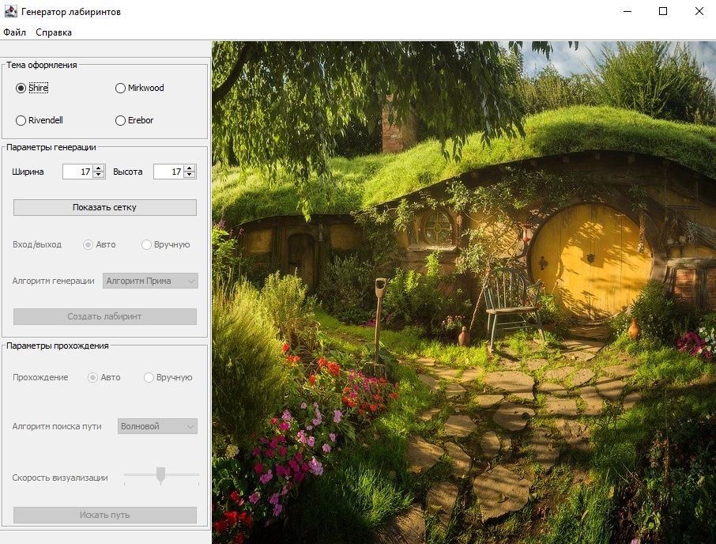
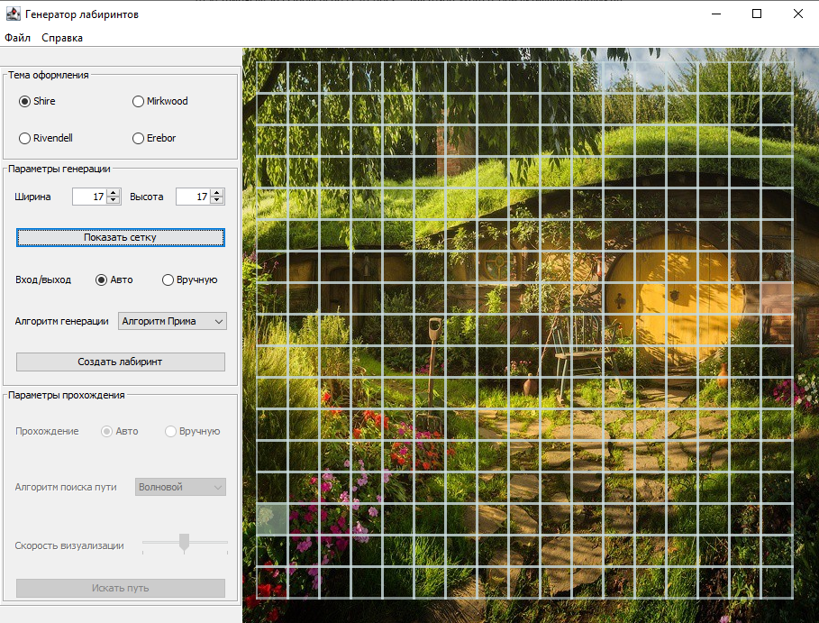
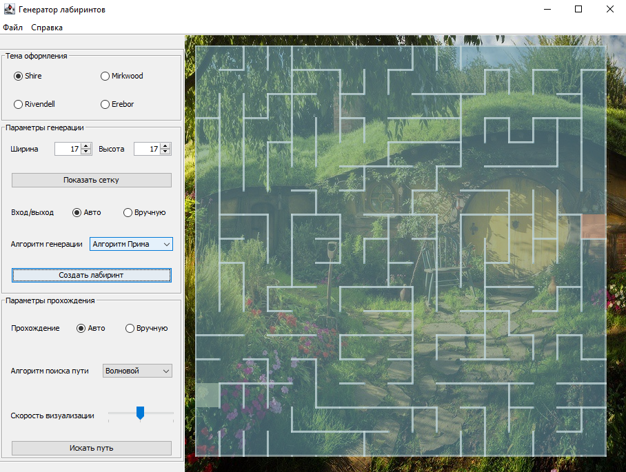
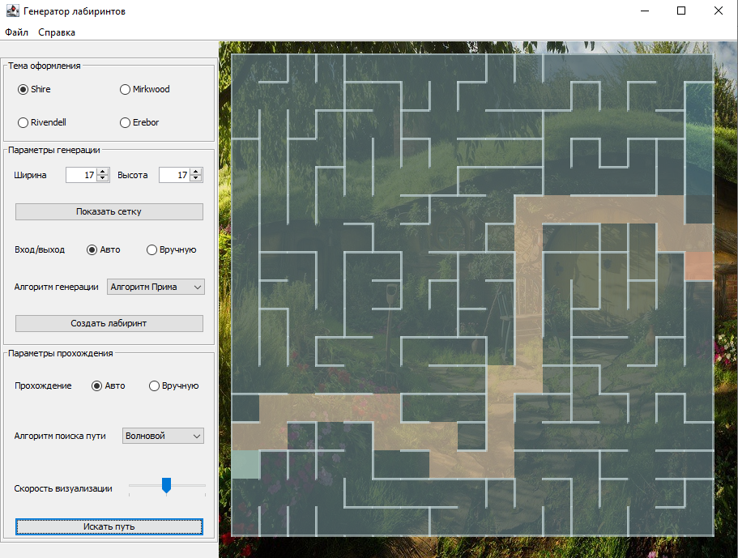
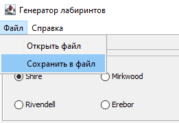

|
|
Приложение предназначено для автоматической генерации односвязного лабиринта с использованием параметров, заданных
пользователем. Пользователь может выбрать один из трех алгоритмов генерации: Краскала, Прима или Sidewinder, а также
производить поиск пути двумя различными алгоритмами либо вручную.
Для реализации системы были выбраны следующие средства: язык программирования Java, среда разработки IntelliJ IDEA
Community Edition 2020.2.3.
Для корректной работы системы необходимо наличие следующих средств:
Система поставляется в виде исполняемого JAR-файла Данный файл необходимо запустить в терминале с помощью команды java –jar либо двойным щелчком мыши под управлением операционной системы, на которой установлена виртуальная машина Java (JRE).
При первом запуске приложения на экране вы увидите главную форму приложения, представленную на рисунке А.1. На ней находятся поле для лабиринта и три области для различных действий:

Чтобы создать лабиринт, можно воспользоваться параметрами по умолчанию либо ввести другие значения ширины и высоты лабиринта, а затем нажать кнопку «Показать сетку». На поле справа появится сетка заданных размеров, изображенная на рисунке А.2.

Расстановка входа и выхода производится либо автоматически, либо по выбору пользователя. Поле для выбора способа расстановки находится в блоке настроек «Параметры генерации». Там же располагается выпадающий список доступных алгоритмов генерации лабиринта. Пользователь может воспользоваться параметрами по умолчанию либо задать свои параметры. После нажатия кнопки «Создать лабиринт» в поле справа будет запущена визуализация процесса генерации лабиринта. Результат этого процесса приведен на рисунке А.3.

Когда лабиринт создан, пользователю становятся доступны настройки параметров прохождения лабиринта в соответствующем поле слева. Пользователь может как воспользоваться параметрами по умолчанию, так и изменить выбранный алгоритм автоматического прохождения либо выбрать режим ручного прохождения. Если выбран автоматический режим, на поле справа будет запущена визуализация выбранного алгоритма поиска пути.

В программе предусмотрена возможность сохранения лабиринта в файл и загрузка лабиринта из файла. Найти эти функции можно в пункте меню "Файл", отмеченном на рисунке А.5.
